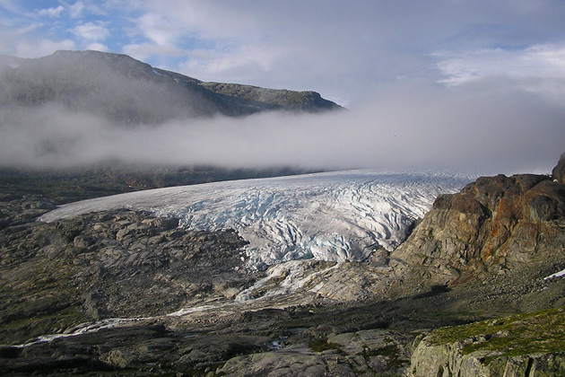

Star Wars Episode V: The Empire Strikes Back
Main Content

The Millennium Falcon was built on a huge soundstage at Elstree Studios, in Hertfordshire, where most of the filming took place – 64 sets and 250 scenes over a four month shoot.
The ice planet ‘Hoth’ was filmed on the Hardangerjøkulen Glacier, at Finse. In the heart of the Hardangervidden mountain plateau, Finse is at the foot of the glacier. It’s easily accessible by rail, two and a half hours from Bergen, and four and a half from Oslo. The railway station at Finse is the highest in Europe, situated between Hallingskarvet National Park and Hardangervidda National Park.
The script was the last work of Leigh Brackett, veteran screenwriter of The Big Sleep and Rio Bravo.
Visit Info
Visit The Film Locations
Norway
Visit: Norway
Visit: Finse
UK | Hertfordshire
Visit: Hertfordshire